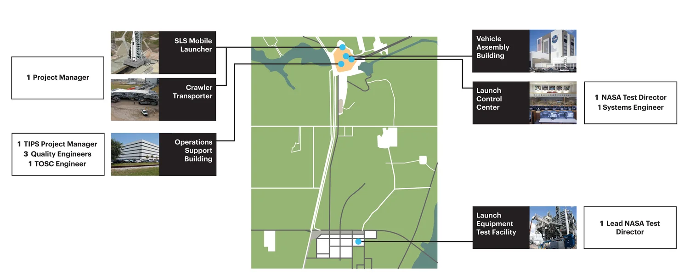
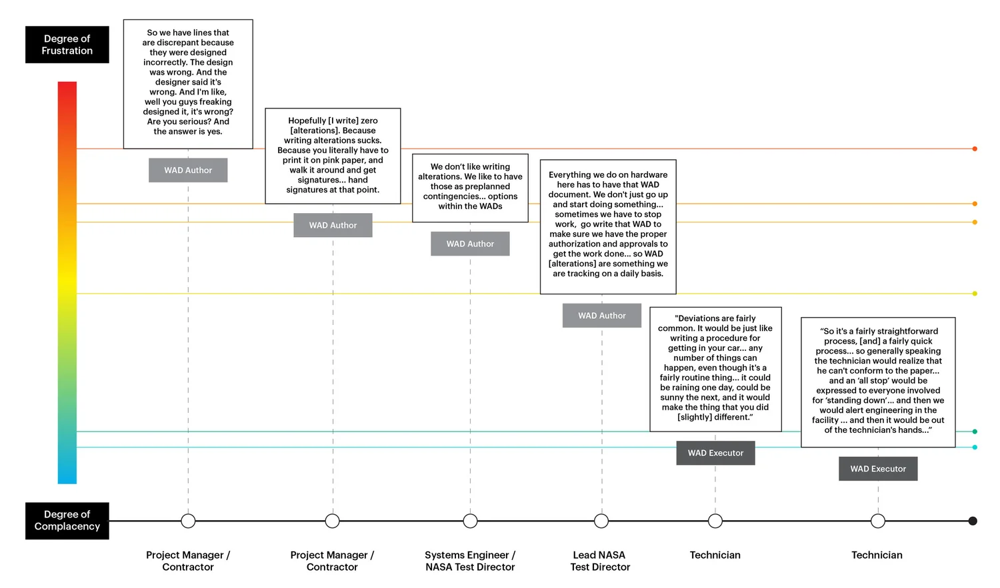
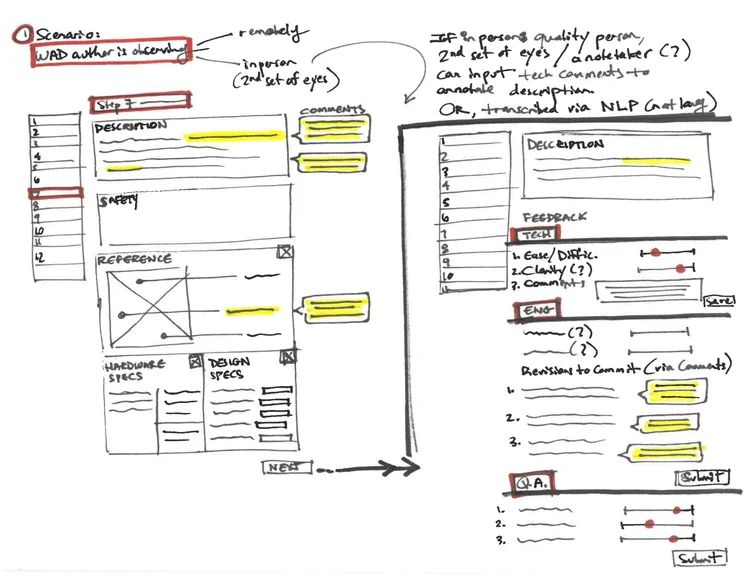
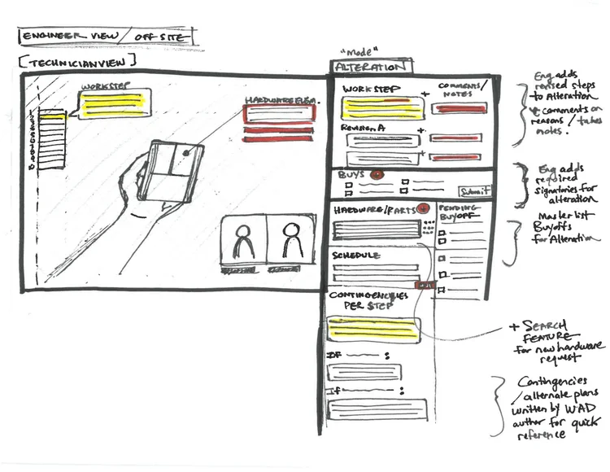

NASA is preparing to launch the Space Launch System (SLS) — the most powerful rocket ever built. At Kennedy Space Center, technicians rely on paper-based Work Authorization Documents (WADs) to execute every step of hardware assembly and testing. One mistake could delay a multi-billion dollar launch or compromise crew safety.
The current system creates serious inefficiencies: engineers hand-deliver paper forms across the facility by bicycle, critical information gets lost when procedures need changes during execution, and lessons learned from field work rarely inform future procedures.
02
02The question
How can we modernize rocket installation instructions while maintaining safety standards?
Design a digital system that preserves the precision and safety of NASA’s work authorization process while enabling real-time collaboration between field technicians and engineering teams.
03
03The solution
Replace paper-based procedures with a real-time digital platform.
We designed a tablet-based platform that replaces paper WADs with interactive step-by-step guidance, embedded multimedia references, and real-time digital alteration workflows that eliminate physical document delivery and work stoppages. The system captures field context through voice notes and photos that feed back to procedure authors, creating continuous improvement loops while maintaining full offline functionality for RF-shielded areas.
Potential organizational impact
The platform reduces alteration approval times from days to hours, minimizing costly work stoppages and crew idle time that currently delay multi-billion dollar launches. By digitally preserving field feedback and creating audit trails with complete context, the system transforms tacit knowledge into accessible organizational learning that continuously improves procedure quality and trains future technicians.
04
04The problem space
Work Authorization Documents are cumbersome.
WADs are step-by-step instruction manuals that guide technicians through complex tasks — assembling rocket stages, testing fuel systems, moving multi-ton spacecraft components. Every step must be followed exactly as written and signed off to ensure safety and reliability.
Why this matters
A single error could cause catastrophic hardware failure
Launches cost upwards of $500M, and delays have massive ripple effects
Crew safety depends on flawless execution
How the current process works
Engineers author detailed procedures (weeks to months)
Multiple stakeholders review and approve — safety, quality, engineering
Paper documents are delivered to technicians for execution
When issues arise, all work stops until alterations are approved
Alterations require physical delivery to signatories for approval
After completion, papers go into filing cabinets
05
05Research process
Three months of field research at Kennedy Space Center.
6 site visits across Kennedy Space Center facilities
15 interviews with technicians, engineers, test directors, and quality assurance specialists
Field observations at the Launch Equipment Test Facility and Vehicle Assembly Building
Competitive analysis of 12 industrial work execution platforms
Analogous domain research in field service, manufacturing, and telemedicine

Locations of our user interviews across Kennedy Space Center06
06Critical findings
Where paper breaks down.
“Alterations are where everything falls apart.”
When technicians encounter unexpected issues in the field (wrong part, unclear instruction, safety concern) they have to stop all work immediately, contact the original engineer, wait for alteration paperwork to be created, have someone physically deliver it to multiple signatories for approval, and only resume work after all approvals are collected.
“I’ve literally had to get on a bicycle and ride around Kennedy Space Center hunting down three different people to sign off on a simple tool substitution. Meanwhile, my whole crew is waiting.”
Why this matters: a simple change that takes 5 minutes to identify can result in hours or days of downtime.
Valuable knowledge disappears into filing cabinets.
Technicians learn a lot during execution: which steps are confusing, which tools don’t work well, what safety concerns should be flagged. But once WADs are completed and filed away, this context is gone.
Why this matters: the same problems keep happening across similar procedures, and future WADs are written without any benefit from field experience.
Paper creates impossible tradeoffs.
Technicians work in challenging environments — high places, tight spaces, extreme temperatures. Paper is hard to reference while using both hands, difficult to read in dim spaces, nearly impossible to annotate while wearing thick gloves, and gets damaged by weather or industrial conditions.
What this means: workers develop workarounds (taking photos of steps, memorizing sequences) that actually undermine the safety-critical documentation process.
There is no one-size-fits-all template.
The same WAD format gets used for routine inspections (15 minutes, one person), complex multi-day assemblies (weeks, teams of 20+), and emergency repairs (time-critical, high-stress).
What this means: simple procedures are over-documented while complex ones lack the dynamic support teams actually need.

Various user frustrations with WADs throughout the workflow07
07Design principles
Four principles from the research guided our work.
Facilitate precision without rigidity.
Maintain procedure consistency while allowing for adaptation.
Build real-time collaboration.
Connect field technicians with engineering support instantly.
Capture institutional knowledge.
Turn field insights into organizational learning.
Design for extreme conditions.
Support work in challenging physical environments.
08
08Explored concepts
Two complementary concepts: a tablet platform and a heads-up display.

Concept A — tablet interface

Concept B — heads-up display
Concept A: Dynamic digital WAD platform (tablet)
Step-by-step execution with smart assistance
Large, glove-friendly touch targets
Auto-advancing steps with a voice confirmation option
Embedded photos, videos, and 3D model references
Automatic logging of timestamps and conditions
Real-time alteration workflow
Technician flags an issue directly in the interface
System routes to the appropriate engineer based on procedure type
Engineer can video chat with the technician to assess the situation
Digital approval chain replaces physical delivery
All stakeholders get notified in real time
Context capture
Quick voice notes for each step
Photo annotations for “as-built” documentation
Difficulty ratings to flag confusing procedures
Suggested improvements that feed back to authors
Offline resilience
Full functionality without a network connection
Automatic sync when connectivity is restored
Critical for work in RF-shielded or remote areas
Concept B: Heads-up display for hands-free execution
For scenarios where technicians need both hands free or can’t safely handle a tablet, we designed an AR-enabled heads-up display concept.
Hands-free operation
Voice-controlled navigation through steps
Visual overlay of instructions in the field of view
Gesture recognition for confirmation and flagging issues
Spatial awareness
AR markers show exactly where to perform each action
Measurements and alignments projected onto hardware
Safety zones highlighted in real time
Remote supervision
Engineer sees what the technician sees
Can annotate the technician’s view in real time
Reduces the need for physical presence during routine oversight
09
09Impact & outcomes*
From days to hours — and knowledge that stops disappearing.
Process efficiency
Reduction in alteration approval time — from days to hours
Elimination of physical document delivery
Reduced work stoppages and crew idle time
Safety & quality
Richer documentation of as-built conditions
Real-time expert support reduces errors
Complete audit trail with timestamps and context
Organizational learning
Field feedback loops back to procedure authors
Patterns in alterations inform continuous improvement
Institutional knowledge preserved digitally
Next steps: the TOSC team is evaluating our proposals for pilot testing with select procedures.
10
10What I learned
Designing for a domain where 99% isn’t good enough.
Designing for 100% reliability contexts may require convenience tradeoffs.
In most consumer products, a 99% success rate is excellent. In aerospace, 99.9% isn’t good enough. This fundamentally changed how we prioritized redundant gateways over convenient usability.
Chesterton’s Fence: understand why current processes exist.
My first instinct was to simplify the approval chain. But through research, I learned that each signatory served a critical safety function. Good design enhances these processes rather than trying to work around them.
The best insights come from observing workarounds.
When we saw technicians taking photos of WAD steps on their phones, we realized they encountered pain points around accessing information in difficult environments.
11
11Future opportunities
If I had more time, I would…
Conduct usability testing with actual technicians in realistic work environments
Explore integration with existing NASA systems (Solumina, Maximo)
Design for edge cases: emergency procedures, multi-facility coordination
Develop detailed information architecture for the institutional knowledge repository
Prototype an AR heads-up display with actual hardware
*Certain details have been omitted due to disclosure policies.